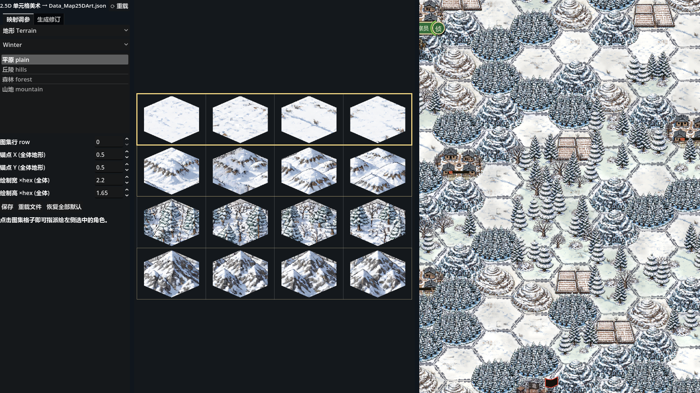
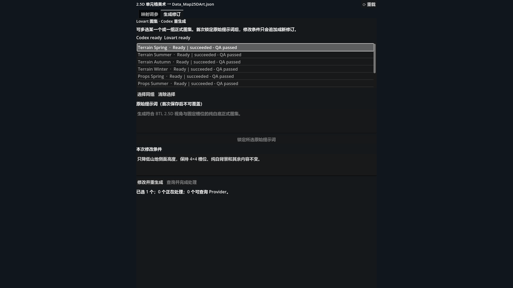

一个主屏，两个职责页签
“映射调参”负责游戏最终怎样使用图集；“生成修订”负责图集从哪来、为什么重做、Provider 与本地处理进行到哪里。两套数据刻意分离，避免一边调画面，一边意外改写生产历史。
{kind=link}

| 区域 | 用途 | 操作结果 |
|---|---|---|
| 左栏 | 类别、季节、角色和数值参数；在“映射调参 / 生成修订”间切换。 | 改变当前编辑上下文，不直接写盘。 |
| 中栏 | 显示当前类别对应的正式图集与槽位网格。 | 点击行或格子，把它指派给左侧选中的角色。 |
| 右栏 | 内嵌真实规则内核与真实 Map2D 渲染器。 | 参数和映射即时注入预览；不需要先保存、重启游戏。 |
类别列表仍可看到 Units，但逐帧预览、动作重生成和视频状态已迁移到独立“BTL 角色动画”主屏。制作 Idle、Move、Attack 时请使用单位帧动画生产规范。
先选语义，再把图集槽位交给它
编辑器不是在图片上“画地形”，而是在维护“游戏语义 → 图集位置 + 渲染参数”的小型差异层。默认配置仍在源码，保存文件只记录与默认值不同的部分。
地形 Terrain
按 Winter、Spring、Summer、Autumn 切换正式图集；从 plain、hills、forest、mountain 中选择角色，再点击图集行完成映射。
摆件 Props
同样按四季切换；村庄、设施等对象使用明确的二维格子坐标，因此点击的是某一列与某一行的交点。
特效 Effects
红旗、太阳旗、黑旗、火焰等效果映射到图集行；用于保持战场信息层与地形图集解耦。
季节预览
编辑器把预览回合切到对应月份，Map2D 会沿运行时的季节路径换图，而不是只替换中栏图片。
- 选择类别与季节先确定 Terrain、Props 或 Effects；地形和摆件再选 Winter、Spring、Summer、Autumn。
- 选择语义角色在角色列表点选要修改的对象。左栏只展示该对象适用的参数，减少误改。
- 点击图集槽位地形和特效按行指派，摆件按单元格指派；金色框标识当前映射。
- 在真实地图里验收检查尺度、脚点、遮挡、季节搭配和远近辨认度。拖动数值时，昂贵的全层重录会自动合并，停手后刷新。
- 明确保存确认满意后点击“保存”。“重载文件”丢弃未保存改动并重新读取差异层；“恢复全部默认”把本次配置还原为源码默认。
画面即时变化只代表当前编辑器内存已更新。看到“已保存 Data_Map25DArt.json”后，差异层才真正落盘；修改生产提示词也不会替你保存映射。
原始提示词不覆盖，修改条件只追加
每张图集都有稳定的 asset ID、一次锁定的真实原始提示词和不断追加的 revision。重生成时真正送出的 effective prompt 是“原始提示词 + 本次修改条件”，历史原因不会被新描述抹掉。
{kind=link}

首次接管旧图集
旧资产如果没有台账，先单选它，在“原始提示词”中录入当时真实使用的提示词，再点击“锁定所选原始提示词”。一旦锁定，字段变为只读；系统拒绝用另一段文本覆盖它。没有真实提示词时，不要凭印象编写，更不要发起重生成。
发起修改 / 重生成
- 选择作用范围单选只改当前图集；Ctrl 多选可组成自定义批次；“选择同组”会选择同类四季图集，例如四张 terrain atlas。
- 写本次修改条件只描述增量，如“压低山地侧面，保持 4×4 槽位顺序与其他内容不变”。不要重写整份原始提示词。
- 点击“修改并重生成”编辑器先显示费用确认弹窗；只有明确确认后，才创建 revision 与 request，并允许 Codex worker 向 Lovart 提交。
- 处理二次确认Provider 若返回
pendingConfirmation，列表会进入“Awaiting confirmation”，此时用“确认待处理费用”明确继续。 - 查询并完成处理已有 thread ID 或 submit ID 的任务可以查询。Provider 完成后，Codex 下载源图、抠图、组装图集、运行 QA，再把正式输出导入项目。
每次图像 Provider 请求必须只返回一张、不透明、均匀纯 #FFFFFF 背景的源图；容许的导出量化偏差最多为每通道 2 级。透明图、接触表和最终图集都是后续派生物，不能倒充 Provider 原图。需要人工检查边缘时，使用BTL 抠图编辑器。
同时看 Provider 状态与本地阶段
列表中的状态由两部分组成：Provider 回答“远端任务怎么样”，local stage 回答“下载与资产处理走到哪一步”。编辑器每秒只检查台账指纹与 worker 进程；只有状态变化时才重新解析完整台账，避免轮询拖慢调参。
| 本地阶段 | 含义 | 你应该做什么 |
|---|---|---|
Queued / Generating | 请求已排队，或 worker 正在调用 Provider。 | 等待；同一资产在活动请求结束前会被锁定。 |
Awaiting confirmation | Provider 要求再次确认预计费用。 | 核对批次数量与费用，再点击“确认待处理费用”。 |
Downloading | 远端 artifact 已成功，正在下载并核对来源。 | 保持项目目录可写，不要手工移动 build 目录。 |
Matting / Packing / Importing | Codex 正在抠图、按既定槽位打包并导入。 | 等待 QA；不要把中间文件直接覆盖正式图集。 |
Ready | 正式输出存在，台账 artifact 路径与 SHA-256 一致。 | 回到“映射调参”，在真实 Map2D 中做最终视觉验收。 |
Failed | Provider、下载、处理、校验或写盘失败。 | 先看 message / error history，修复原因后再发新 revision。 |
Legacy imported / Missing | 旧资产已存在但来源不完整，或正式输出缺失。 | 补录真实提示词与来源，或重新生成；不要伪造 provenance。 |
Provider 常见状态包括 notSubmitted、queued、running、pendingConfirmation、succeeded、failed 与 cancelled。只有看到 Provider ID 的资产才能执行“查询并完成处理”。
运行时覆盖与生产台账严格隔离
| 文件 / 目录 | 保存什么 | 谁可以读取 |
|---|---|---|
Data_Map25DArt.json | 与默认配置不同的图集映射和渲染参数；不是完整默认表。 | 编辑器与游戏运行时。 |
Data_ArtGeneration.json | 不可变 base prompt、追加 revisions、requests、Provider 任务身份和状态、处理阶段、artifact 路径 / URL / MIME / SHA-256 与依赖快照。 | 只供美术生产工具；游戏运行时禁止读取，导出包排除。 |
build/artGeneration/cells/… | Provider 下载源图、处理候选、接触表与 QA 报告。 | 生产工具；这些是候选与证据，不是正式运行时资产。 |
assets/map2d/…/Texture_Map2D*Atlas.png | 通过处理与校验后的正式图集。 | 游戏运行时。进入 Ready 前必须存在并与台账哈希一致。 |
台账可以保存
Provider 名称、thread / submit ID、非敏感参数、状态、时间、修改条件、处理阶段、路径、URL、MIME、哈希、依赖快照和错误历史。
台账绝不能保存
密码、API key、access token、Authorization、cookie 或任何凭据。工具会拒绝常见 secret 字段；凭据只应由 Provider 自己的安全环境管理。
下载成功只说明有一个候选源图。只有抠图、打包、导入和 QA 全部成功，且正式路径与 SHA-256 都通过校验，状态才可以是 Ready。不要绕过流程把 build/ 文件手工复制成正式图集。
三种最常用的工作方法
只修映射或尺度
- 进入“映射调参”。
- 选类别、季节和角色。
- 点槽位或调整参数。
- 在 Map2D 检查遮挡与比例。
- 点击保存。
只重做一张图集
- 进入“生成修订”并单选。
- 确认 base prompt 已锁定。
- 写清一个增量条件。
- 确认费用并等待 / 查询。
- Ready 后回到地图验收。
四季保持同一修改
- 先选任一季节图集。
- 点击“选择同组”。
- 确认确实选中四张。
- 写不改变槽位的统一条件。
- 一次确认批次数量与费用。
接着处理已有远端任务
- 选中状态中带 Provider ID 的资产。
- 点击“查询并完成处理”。
- 若要求费用确认，明确确认。
- 关注 Downloading → Ready。
- 失败时先读 message，不重复盲投。
- 修改条件说明“改什么”与“保持什么不变”。
- 多选前核对数量，避免错误批量消耗额度。
- 每张图集保存自己的 base prompt，不相互覆盖。
- Ready 后仍在四季地图中逐一检查。
- 保存映射前确认状态栏没有未写入错误。
- 正式图集、QA 记录和台账哈希保持一致。
限制、错误与恢复
| 现象 | 原因 | 处理 |
|---|---|---|
| 重生成按钮灰色 | 没有选择、缺少真实 base prompt、Codex / Lovart 环境 missing，或资产已有活动请求。 | 按状态文字逐项补齐；不要用假提示词绕过门禁。 |
| 查询按钮灰色 | 所选资产没有 thread ID / submit ID，或 Codex worker 不可用。 | 先完成一次提交，或恢复 Codex 环境后重载。 |
| 显示“未写入，请重试” | 另一个编辑器或 worker 同时更新台账，CAS / 目录锁阻止了覆盖。 | 让当前 worker 完成，点击重载后再操作；不要手工合并活动请求。 |
| worker 退出但仍显示运行中 | 租约尚未过期，系统为避免双 worker 暂不抢占。 | 保持编辑器打开；租约过期后会从 checkpoint 安全恢复。 |
| Provider 成功但没有 Ready | 下载、源图契约、抠图、打包、导入或哈希校验尚未通过。 | 读本地 stage 与 message；用抠图编辑器诊断边缘，但不要跳过 QA。 |
| 地图预览和预期不同 | 季节、当前角色、正式图集或未保存差异不一致。 | 核对左栏上下文、金色槽位框和状态栏，再重载文件复查。 |
点击主屏标题旁的重载按钮，或使用 Ctrl+R，可以重新读取磁盘状态。它适合 worker 刚完成或外部文件刚更新的场景；有未保存的映射改动时，先决定是否保存。
本页只展示工具界面与流程，不发布私有生成源文件，不复制 assets/audio/ 中的 Civilization VI 对照素材，也不公开任何 Provider 凭据。